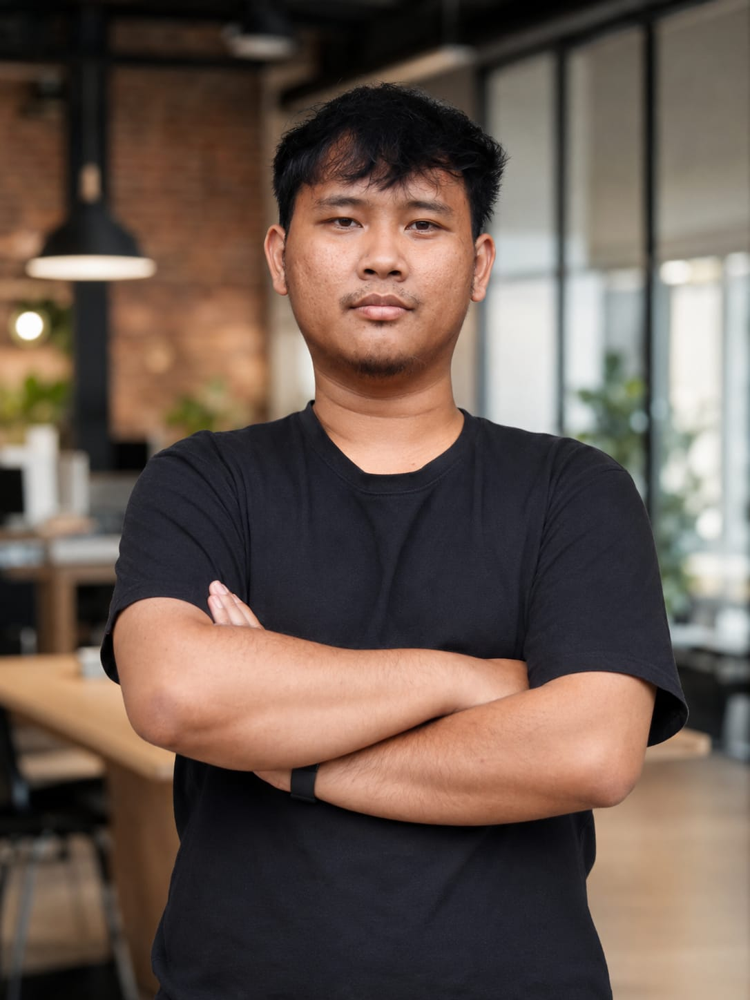

Membangun Sistem yang Skalabel.
Menulis Logika yang Efisien.
Hi, saya Akhmad Fauzi — dikenal sebagai Geats. Seorang Backend Developer sekaligus QA Analyst yang membangun sistem terukur menggunakan Nest.js dan PHP (Laravel), sekaligus memastikan keandalannya melalui pengujian API yang komprehensif, security assessment, dan automation testing. Dua sisi dari satu visi: sistem yang tidak hanya berjalan — tetapi terbukti benar.

Tooling & Expertise
Teknologi yang saya kuasai dan gunakan sehari-hari dalam membangun sistem yang andal.
Analisa mendalam terhadap kebutuhan sistem, memastikan kualitas melalui pengujian terstruktur, dan memanfaatkan AI secara strategis untuk mempercepat development workflow.
Karya Pilihan
Proyek-proyek yang mencerminkan kemampuan teknis dan pemahaman arsitektur sistem saya.
Finance Workspace API
Backend manajemen keuangan multi-workspace dengan isolasi data antar pengguna yang ketat dan laporan dinamis berformat PDF.
- Data Isolation per workspace tenant
- Atomic Transactions untuk integritas data
- Dynamic PDF Report Generation
- Swagger API Documentation
Papanclip
Live DemoEnterprise project management platform berbasis Trello-clone dengan real-time sync, manajemen role yang granular, dan autentikasi OAuth 2.0. Sudah live dan digunakan secara aktif.
- Real-time Sync via WebSocket
- Role-Based Access Control (RBAC)
- OAuth 2.0 Authentication Flow
- Multi-board, multi-member workspace
EasyKan
Sistem payroll otomatis yang mengintegrasikan generate PDF dan workflow pengiriman dokumen via Microsoft Graph API.
- Otomasi generate slip gaji PDF
- Publish & Send email workflow
- Integrasi Microsoft Graph API
- Multi-period payroll management
Rekam Jejak Karier
Perjalanan profesional yang membentuk perspektif teknis dan analitis saya.
Merancang dan membangun infrastruktur backend inti platform, mulai dari desain skema database, implementasi REST API, hingga manajemen deployment ke environment production. Menerapkan lapisan keamanan yang kuat mencakup autentikasi, otorisasi berbasis role, dan proteksi terhadap celah keamanan umum pada aplikasi web.
Merancang dan mengimplementasikan framework automation testing menggunakan OpenClaw dikombinasikan dengan agen ChatGPT-4o untuk mempercepat siklus pengujian. Bertanggung jawab atas pengujian fungsional, regresi, dan validasi sistem sebelum setiap rilis produksi.
Mengembangkan aplikasi web kustom end-to-end untuk klien dari berbagai industri menggunakan PHP (Laravel). Menangani seluruh siklus proyek mulai dari requirement gathering, desain arsitektur, development, hingga deployment dan handover ke klien.
Melaksanakan pengujian manual, regresi, dan daily health checks pada aplikasi produksi. Merancang test case terstruktur, mencatat dan mengelola bug secara sistematis di issue tracker, serta berkolaborasi aktif dengan tim developer untuk memastikan resolusi defect yang efisien dan tepat waktu.
Mengembangkan dan memelihara dashboard BPJS internal perusahaan menggunakan PHP & Laravel, mencakup integrasi data kepesertaan dan pelaporan dinamis. Menjalankan web security penetration testing secara berkala menggunakan Burp Suite untuk mengidentifikasi dan menutup celah keamanan pada aplikasi produksi.
Merancang ERD dan skema database, mengembangkan backend sistem internal, serta melakukan pengujian fungsionalitas aplikasi web perusahaan.
Mari Berkolaborasi
Punya proyek menarik atau peluang kerja? Saya selalu terbuka untuk diskusi.